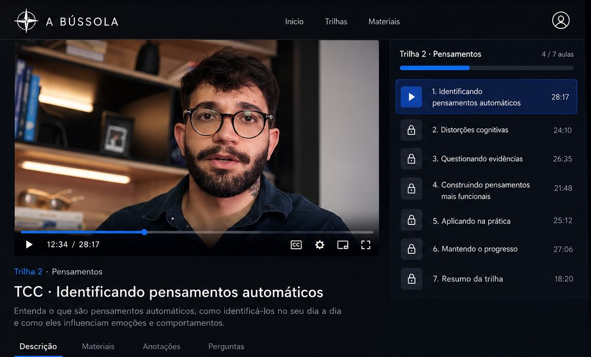

Conheça ferramentas da psicologia para lidar com a ansiedade
Descubra como aplicar técnicas da TCC, DBT e ACT para compreender a ansiedade, aprender a regular suas emoções e a responder aos pensamentos difíceis.
Os transtornos de ansiedade são os problemas de saúde mental mais comuns no mundo
da população brasileira tem algum transtorno de ansiedade, a maior prevalência registrada entre os países analisados.
de pessoas viviam com um transtorno de ansiedade no mundo em 2019.
foi o aumento na prevalência global de ansiedade e depressão no primeiro ano da pandemia de COVID-19.
Sentir ansiedade faz parte da vida: é uma resposta do corpo a situações percebidas como ameaçadoras. Ela passa a pedir atenção quando fica intensa, frequente ou começa a limitar o que você faz. Entender como ela funciona ajuda a reconhecer os sinais e a buscar os recursos adequados, incluindo ajuda profissional quando for o caso.

Três abordagens com base científica, reunidas em um só lugar
A Bússola é uma plataforma de educação online sobre a mente humana vista com um olhar prático e para pessoas comuns. As aulas apresentam ferramentas da Terapia Cognitivo-Comportamental (TCC), da Terapia Comportamental Dialética (DBT) e da Terapia de Aceitação e Compromisso (ACT), abordagens com ampla base de pesquisa, explicadas em linguagem clara.
O conteúdo tem caráter educativo. Ele não é atendimento psicológico e não substitui psicoterapia, avaliação ou tratamento com um profissional.
Ferramentas para identificar pensamentos que alimentam a ansiedade e experimentar outras formas de interpretar as situações.
Habilidades de regulação emocional e de tolerância ao mal-estar para os momentos de maior intensidade.
Práticas de aceitação e de atenção ao presente para agir de acordo com o que importa para você, mesmo com a ansiedade presente.
Por onde você quer começar?
São 10 trilhas independentes. Cada uma aplica ferramentas da TCC, DBT e ACT a um tema da mente humana.
Para quem quer entender a própria mente com base em ciência
A plataforma é indicada se você
- Quer entender como pensamentos, emoções e comportamentos se relacionam no seu dia a dia
- Prefere informação com base científica a promessas rápidas
- Quer se conhecer melhor e compreender o que sente, como a ansiedade, o medo ou a procrastinação
- Quer aprender ferramentas práticas da TCC, DBT e ACT
A plataforma não é indicada se você
- Procura atendimento psicológico ou diagnóstico: a plataforma é educativa
- Está em sofrimento intenso ou em crise: procure um profissional ou ligue para o CVV (188)
- Busca substituir um tratamento em andamento
- Espera resultados garantidos em pouco tempo
O que você vai estudar
Aulas gravadas, organizadas em módulos, disponíveis por 12 meses no computador ou no celular.
Comece aqui
- 1O que é A Bússola?
- 2Estrutura de aprendizado
Como a nossa mente funciona
- 1.1Pensamentos, emoções e comportamentos
- 1.2Como nossa mente funciona dentro do modelo cognitivo
- 2Distorções cognitivas
- 3RPD (curto)
- 4Técnicas de desfusão cognitiva e mindfulness (+roleplay)
- 5Valores
- 6Pragmatismo e desesperança criativa
- 7RPD (completo)
Ferramentas Práticas da TCC para o dia-a-dia
- 1Introdução
- 2Técnicas de respiração
- 3Preocupações úteis vs inúteis + Horário da preocupação
- 4Resolução de problemas
- 5Protocolo para regulação do sono
- 6Emoções
- 7Regulação emocional (curto prazo)
- 8Regulação emocional (longo prazo)
- 9Roda da vida
Trilhas Autônomas
- 1Medo
- 2Ansiedade
- 3Procrastinação
- 4Tristeza e culpa
- 5Gestão de Hábitos
O que dizem sobre as aulas
Comentários de alunos da Bússola sobre o conteúdo e o formato da plataforma.
“Os role plays são um grande ponto de evolução, porque é possível praticar e, ao mesmo tempo, ter um feedback de melhorias ou ângulos diferentes que podem ser explorados na prática.”
“Me faz refletir um pouco mais sobre tudo que estou vivendo.”
“Lucas foi o primeiro psicólogo que realmente vi que sabe o que faz e que me ajudou a resolver o que eu precisava resolver. Recomendei para vários amigos e tenho muita confiança nele.”
O que você recebe ao se inscrever
- 0124 aulas gravadas com ferramentas da TCC, DBT e ACT
- 024 módulos: Comece aqui, Como a nossa mente funciona, Ferramentas Práticas da TCC para o dia-a-dia e Trilhas Autônomas
- 03Trilhas autônomas sobre Medo, Ansiedade, Procrastinação, Tristeza e culpa e Gestão de Hábitos
- 04Acesso por 12 meses, no computador ou no celular
- 057 dias para desistir, com reembolso integral
Quem sou eu?
E aí, tudo certo? Sou Lucas, psicólogo clínico, já atuei como supervisor clínico e sou especialista em práticas baseadas em evidências e terapia cognitivo comportamental, com formação em ACT e DBT.
Além disso, tô sempre envolvido em divulgar e defender a saúde mental através do meu Instagram, compartilhando práticas baseadas em evidências dentro da psicologia para ajudar as pessoas a criarem a vida que querem viver. Meu maior valor de vida é a eficiência.
Quando não estou estudando ou trabalhando, amo brincar com meu gatinho, Noé, passar tempo com minha esposa e cuidar da minha filha, Liz. Também sou fã de musculação, esportes e jiu jitsu, atualmente faixa roxa 1 grau, rsrs.
Sou fã de animes, séries e filmes que envolvem fantasia: Senhor dos Anéis, O Hobbit, Demon Slayer, Blade Runner e Vinland Saga com certeza estão entre as obras que mais me encantaram até hoje (se você gosta ou já viu alguma delas, já considero que somos amigos íntimos, hahaha).
Sou bem caseiro, e pra mim uma noite perfeita é fazer um hambúrguer com minha esposa e filha, assistir uma boa série debaixo das cobertas com uma chuvinha de fundo.
desistir
Conheça o conteúdo antes de decidir.
O acesso a todas as trilhas é liberado assim que o pagamento é confirmado. Se, em até 7 dias após a compra, você decidir que a plataforma não é para você, solicite o cancelamento pela Hotmart e receba de volta 100% do valor pago.
Perguntas frequentes
Não. A Bússola é uma plataforma de educação, com caráter informativo. Ela não é atendimento psicológico e não substitui psicoterapia, diagnóstico ou tratamento.
São três abordagens da psicologia com ampla base de pesquisa. A TCC trabalha a relação entre pensamentos, emoções e comportamentos; a DBT desenvolve habilidades de regulação emocional; a ACT trabalha aceitação e ação orientada por valores. Na Bússola, você aprende ferramentas dessas abordagens em formato educativo.
Sim. O conteúdo pode complementar o acompanhamento. Em caso de dúvida, converse com o profissional que acompanha você.
Não. As aulas são gravadas e a plataforma não inclui atendimento psicológico.
O pagamento é feito pela Hotmart. [Cartão de crédito em até 12x, PIX ou boleto.]
Por 12 meses a partir da confirmação do pagamento.
Você pode solicitar o reembolso integral em até 7 dias após a compra.
Procure ajuda imediatamente: ligue para o CVV no 188 (gratuito, 24 horas), para o SAMU no 192 ou vá a uma unidade de saúde. A plataforma não é indicada para situações de crise.